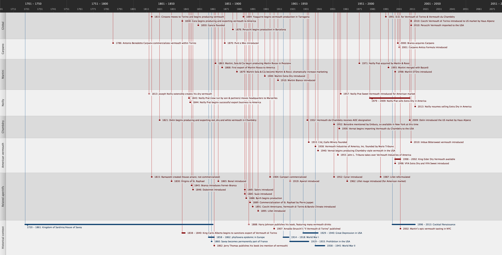

Timeline of Vermouth
Introduction
blah


Special thanks to Eric Seed, Romée de Gorianoff, Alexandre Vingtier and Carl Sutton for their invaluable assistance on this project. Otherwise, the individual to blame for this site is Martin Doudoroff, a New York City cocktail enthusiast driven to this sort of folly from time to time.
Corrections, augmentations and general feedback, particularly from vermouth and quinquina producers, are all welcomed at martin@mixologytech.com.
 The text and original images of Vermouth 101 is licensed under a Creative Commons Attribution-Share Alike 3.0 United States License. Bottle and label photography employed on the site are not covered by this license, belong to the brand-holders in question and are protected by copyright law. When in doubt, ask.
The text and original images of Vermouth 101 is licensed under a Creative Commons Attribution-Share Alike 3.0 United States License. Bottle and label photography employed on the site are not covered by this license, belong to the brand-holders in question and are protected by copyright law. When in doubt, ask.
Vermouth 101 was edited by Martin Doudoroff, inspired by preceding work by Martin Doudoroff & Ted Haigh. All trademarks and intellectual property employed in discussing brands belong to their respective owners.